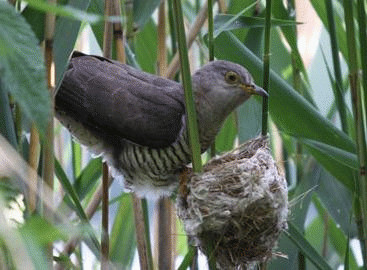

Today we will analyze grouped data in a variety of ways: a) as a traditional one-way ANOVA, b) as a dummy-coded regression, and c) as a general linear model (GLM). Since GLM expresses all analyses as regressions, we expect that all three of these approaches will give identical results, but with different standard output. By comparing the output we get from each approach we can begin to learn how to interpret GLM output when we are using it to conduct an analysis of variance on grouped data. We will also learn how to take advantage of the tests of coefficients that are part of the standard GLM output, but not part of the standard ANOVA output in R.
|  |
The data we will use today gives the length of European cuckoo eggs laid in nests of various host species (if you have taken Biol 215 here you probably recognize it). European cuckoos are nest parasites, which means they do not build nests of their own, but instead place their eggs in the nests of other "host" bird species. They have been observed laying their eggs on the ground, picking them up in their beaks, and then depositing them in a host nest nearby. |
|
These host species raise the cuckoo chick as its own, even though the cuckoo chick is often much larger than the host species' chicks. Cuckoo chicks hatch quickly and grow rapidly after hatching, and are able to actively eject the host species' eggs from the nest. Hosts often end up raising only the cuckoo chick. |
|
|
As the cuckoo chick reaches full size, it may be substantially larger than the host adults. This chick is being fed by a meadow pipit. |
|
 |
One of the host species cuckoos use is the European wren. Wrens are quite a bit smaller than meadow pipits, and you can see that feeding such a large cuckoo chick must be very taxing for such a small host. At some point the food needs of the cuckoo chick could exceed the host pair's foraging ability, and the cuckoo chick may starve. The size of the egg is related to the size of the chick, such that smaller cuckoo eggs tend to give rise to smaller adults. Given this, it seems likely that a female cuckoo's reproductive success would increase if she matched her egg sizes to the size of the host species. These data were measured by Oswald Latter in 1902 using museum egg collections to address this question. |
The question we are asking is, are cuckoo egg lengths different in different host species nests?
Instructions
To begin, download this file, and save it to your h-drive.
Recall from lecture that when there are only two groups, we can dummy-code the groups with a single numeric variable and analyze data as a simple linear regression. We will demonstrate this with just two host species first, and then later we will generalize the approach to the full set of six host species. Normally it would not be necessary to dummy code factors (i.e. categorical variables) by hand, because R will take care of it for us. We will do it today to help you understand how the process works, but will let R take care of this tedious work for us hereafter.
Two host species
A. Dummy coding the two species data
1. Import the "two_sp" sheet into R Studio, and call the R data set "twosp". You will see there are 15 measurements of cuckoo egg length for each of two host species, the wren and the tree pipit.
2. Start a new R Script for your commands - remember, this will allow you to record all your steps, and to fix mistakes, so that you have a nice clean, repeatable set of steps to refer to, and to document your work.
3. The first thing we need to do is to make a dummy-coded version of the Species column. We can take advantage of the model.matrix() command in R to do this for us, but model.matrix() produces a column for the intercept of the model as well - we will use it, but then will drop the intercept column so that all that is left is the dummy-coded species.
So, in your R script, enter the line:
model.matrix(~twosp$species)
and run it. You'll see that on the console you will get a column for the intercept, and one for the dummy-coded Wren. There is some additional stuff at the bottom that gives attributes of the matrix that we won't use - we aren't actually interested in the entire model matrix, just the dummy-coded Wren column, so we can ignore the rest for now.
To get just the dummy-coded column, edit the command to read:
model.matrix(~twosp$species)[ , -1]
and run it. The model.matrix() command returns a matrix, and we can extract the part of the matrix we want as part of the command. Adding a row, column index at the end causes only the rows and columns specified to be returned. The row index in the first position is blank, so all rows are returned. Using a negative in front of the 1 in the column index position causes the first column to be dropped, such that only the dummy-coded Wren column is returned.
Finally, to get this column added to the twosp data set, edit the command once again to read:
model.matrix(~twosp$species)[,-1] -> twosp$Wren
If you look at twosp you'll see that there is now a new Wren column, which has a 1 in every row that is a Wren, and a 0 for every row that is a Tree Pipit.
B. Look at your data
Load the gplots package, and use plotmeans() to graph the lengths grouped by species.
The plot will give you a mean for Tree Pipit and a mean for Wren, and the 95% CI's should be clearly non-overlapping, with a low mean for Wren. You would expect that the ANOVA should be significant given this.
We will conduct an ANOVA with these data using species as the grouping variable, and then use regression with Wren as the predictor. Both of these analyses will ask the same question about the data (i.e. can length be explained by species), but the regression approach will use the mean for one species as the intercept (which we'll call the "baseline" group), and the slope of the regression line will be the difference between the baseline species and the other species.
Take a look at the plot - you have set Wren to 1, and Tree Pipit to 0 in your dummy-coded column. When you use regression or GLM to analyze the differences between the groups, which species mean will be equal to the intercept term? Click here to see if you're right.
Should the coefficient on the Wren dummy variable be positive or negative? Click here to see if you're right.
Start a new file in MS Word, and copy and paste your graph into your Word file.
C. ANOVA
1. We'll start with the analysis you already know how to use for comparing means of grouped data, ANOVA.
We used the aov() function to do ANOVA last time, but the lm() function can do ANOVA as well. If we use a categorical variable as the predictor in the model formula then we will get ANOVA output from lm(), and if we use a numeric predictor we get regression output. So, to get our ANOVA use the commands:
lm(length ~ species, data = twosp) -> twosp.anova
anova(twosp.anova)
The first command conducts the analysis, and the second produces the ANOVA table.
2. Copy and paste the ANOVA table into your MS Word document. If it looks scrambled in Word, select the output and change its font to Courier.
Load the biol531 package, and use the summarySE function to make a table of summary statistics for the two species. Copy and paste it to your Word file as well.
Now that we know what the ANOVA table should look like, you can move on to using regression on our dummy coded variable.
D. Regression with dummy coded species
1. To do your regression analysis, use the command:
lm(length ~ Wren, data = twosp) -> twosp.lm
If you type the name twosp.lm in the console you'll see the coefficients reported. Copy the output and paste it into your Word file.
2. Now that the model is fit, generate an ANOVA table using the command:
anova(twosp.lm)
You'll see that the ANOVA table is exactly the same, except that Wren is shown as the predictor instead of species.
3. Copy and paste the ANOVA table to Word, below the first block of output.
Now that you have an idea of how this works using a simple example with
only two species to compare, we'll repeat the procedure with six
species.
Six host species
A. Dummy coding the six species data.
1. Import the "all_sp" worksheet into an R data set called allsp.
2. We will use the model.matrix() command again, but since we will now have 5 columns to represent 6 species we need to do a little more work to get the dummy codes into the allsp data set, labeled properly.
To get the dummy-coded columns into the allsp data set, use the command:
data.frame(allsp, model.matrix(~allsp$species)[,-1]) -> allsp
The data.frame() command is used to work with R data sets (called "data frames" in R terminology). This command is taking an existing data frame, allsp, and adding on columns using our model.matrix() statement. Remember, using the -1 in the row, column index in square brackets drops the intercept term, and leaves behind only the dummy-coded species. Assigning back into allsp replaces allsp with this new data frame. You should now have 7 columns in allsp, the 2 original ones plus 5 dummy-coded columns.
But, we're not done yet - the default naming on the dummy-coded columns is needlessly messy and difficult to read, so we need to re-label them. If you type the command:
colnames(allsp)
you'll see that column 3 through 7 are labeled by the name of the data frame and the species column, and only then give the name of the species. We can replace just these 5 column names with the names we want by assigning new values with the colnames() command - modify it to read:
colnames(allsp)[3:7] <- c("Meadow.Pipit","Pied.Wagtail","Robin","Tree.Pipit","Wren")
This command identifies the 3rd through the 7th column name, and sets them to the vector of labels on the right.
You're all set to move on to some graphing and analysis.
B. Look at your data.
Produce another plot comparing means for the six host species in this data set, like you did for two species (you can use the species column for grouping). Copy and paste the graph into Word.
Take a look at the plot - now Hedge Sparrow is the species with 0 on all the dummy coded variables. What will the intercept represent? Click here to see if you're right.
Should the coefficient on the Wren dummy variable be positive or negative? Click here to see if you're right.
C. ANOVA
Conduct an ANOVA on these six species, as you did for the two species data set. Use the same naming convention as we started using with two species - use "allsp.anova" for the name of the model. Record the same output as you did for the two group analysis (including the table of species means).
D. (Multiple) Regression
To conduct a regression using the dummy-coded variables is to conduct your first multiple regression. We will learn more about multiple regression in the coming weeks, but for now you just need to know that we are still predicting a single response (length), but we will be using each dummy-coded column as a predictor. The command for this analysis is thus:
lm(length ~ Meadow.Pipit + Pied.Wagtail + Robin + Tree.Pipit + Wren, data = allsp) -> allsp.lm
anova(allsp.lm)
Run the analysis and record the ANOVA table in your Word document. It will look like this:
Analysis of Variance Table
Response: length
Df Sum Sq Mean Sq F value
Pr(>F)
Meadow.Pipit 1 1.767 1.7672 2.1567
0.1446995
Pied.Wagtail 1 2.202 2.2016 2.6869
0.1039311
Robin 1
0.209 0.2092 0.2553 0.6143459
Tree.Pipit 1 9.832 9.8319 11.9991
0.0007507 ***
Wren 1
28.800 28.8002 35.1486 3.329e-08 ***
Residuals 114 93.410
0.8194
---
Signif. codes: 0 ‘***’ 0.001 ‘**’ 0.01 ‘*’ 0.05 ‘.’ 0.1 ‘ ’ 1
The ANOVA table you get from this approach has a line for each dummy variable. In a multiple regression each predictor is tested for its effect on egg length separately. Since regression predictors get 1 degrees of freedom, across all of the predictors we are using 5 degrees of freedom, which is the same as when we used species in an ANOVA. If this is the same analysis as our ANOVA, the sums of squares explained by these 5 predictors should be the same as the species sums of squares we got when species was used as a grouping variable in our ANOVA. We can check this by extracting the sums of squares from the table and summing them.
The ANOVA table we get with anova(allsp.lm) is structured with several named components. To see what they are use the command:
names(anova(allsp.lm))
You'll see the output:
[1] "Df" "Sum Sq" "Mean Sq" "F value" "Pr(>F)"
The sums of squares are the second named component, called "Sum Sq". We can pull just the sums of squares with the command:
anova(allsp.lm)["Sum Sq"]
We're using the square brackets this time to specify the name of a named component, rather than giving an index number. We could get the same thing with the command:
anova(allsp.lm)[2]
because the sums of squares are the second named component. You'll see that the final row of the sums of squares column is the residual SS - this is the unexplained, random variation. It equals the residual SS from your ANOVA, but we don't want to include it in our sum of the SS explained by our five dummy-coded species. So, we can sum all but the final row of this column using the command:
sum(anova(allsp.lm)[-6, "Sum Sq"])
This will give you a total of the five dummy-coded predictors, and it should equal the SS for species that you got in your ANOVA.